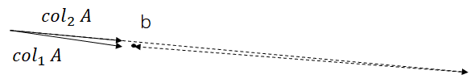

Column Space QR
High-Level Idea
Why QR?
\[ \begin{aligned} cond A^T A &= ||A^T A|| \cdot ||(A^T A)^{-1}||\\ &\approx ||A^T|| \cdot ||A|| \cdot ||A^{-1}|| \cdot ||A^{-T}|| &= cond A^2 \end{aligned} \]
为了避免计算\(A^T A\)，我们可以使用QR分解。
QR Factorization
\[ A = QR\\ Q^T Q = I\\ R \text{ is upper triangular} \\ A^T A = R^T Q^T Q R = R^T R\\ \]
\[ \begin{aligned} A^T A x &= A^T b \\ R^T R x &= R^T Q^T b \\ R x &= Q^T b \\ \rightarrow x &= R^{-1} Q^T b \end{aligned} \]
前提是\(R\)可逆。已知\(Q,R\)之后求解出\(x\)的复杂度为\(O(n^2)\)（上三角求解）。
\(Ax = b\)的几何解释
\(x\)可以认为是使得组成\(A\)的列向量的加权和这个向量离\(b\)最近的向量时对应的权重向量。
当\(A\)的列向量之间的角度很小时，很小的扰动也会使得结果非常不稳定。 
When Isn't \(A^T A\) Ill-Conditioned?
\[ \textrm{cond } I_{n \times n} = 1\\ (\textrm{w.r.t. } ||\cdot||_2)\\ \]
Desirable: \(A^T A\approx I_{n \times n}(then, \textrm{cond } A^T A \approx 1!)\)
Doesn't mean \(A=I_{n \times n}\).
Interpreting \(A^T A = I_{n \times n}\)
\[ Q^T Q = \begin{bmatrix} - & q_1 & - \\ - & q_2 & - \\ - & \vdots & - \\ - & q_n & - \end{bmatrix} \begin{bmatrix} | & | & | & | \\ q_1 & q_2 & \cdots & q_n \\ | & | & | & | \end{bmatrix}= \begin{bmatrix} q_1 \cdot q_1 & q_1 \cdot q_2 & \cdots & q_1 \cdot q_n \\ q_2 \cdot q_1 & q_2 \cdot q_2 & \cdots & q_2 \cdot q_n \\ \vdots & \vdots & \ddots & \vdots \\ q_n \cdot q_1 & q_n \cdot q_2 & \cdots & q_n \cdot q_n \\ \end{bmatrix} \]
When \(Q^T Q = I_{n \times n}\)
\[ q_i \cdot q_j = \begin{cases} 1 &\textrm{when } i = j \\ 0 &\textrm{when } i \neq j \end{cases} \]
Orthonormal; orthogonal matrix
A set of vectors \(\{v_1, v_2, \cdots, v_n\}\) is orthonormal if \(||v_i||=1\) for all \(i\) and \(v_i \cdot v_j = 0\) for all \(i \neq j\). A square matrix whose columns are orthonormal is called an orthogonal matrix.
Isometry Property
\[ ||Q\mathbf{x}||^2 = (Q\mathbf{x})^T (Q\mathbf{x}) = \mathbf{x}^T Q^T Q \mathbf{x} = \mathbf{x}^T \mathbf{x}\\ (Q\mathbf{x})\cdot(Q\mathbf{y}) = \mathbf{x}^T Q^T Q \mathbf{y} = \mathbf{x} \cdot \mathbf{y} \]
Alternative Intuition for Least-Squares
\[ A^T A x = A^T b\leftrightarrow \min_x ||Ax - b||_2 \]
\(Ax = b\)的解是\(b\)在\(A\)的列空间上的投影。\(\textrm{proj}_{\textrm{col } A} b\)。
Observation
Lemma: Column space invariance
For any \(A \in \mathbb{R}^{m \times n}\) and invertible \(B \in \mathbb{R}^{n \times n}\), \(\textrm{col } A = \textrm{col } AB\).
proof: \[ \begin{aligned} \text{Take } b \in \textrm{col } A &\Rightarrow \exists x \textrm{ s.t. } Ax = b\\ &\Rightarrow AB(B^{-1}x) = b\\ &\Rightarrow b \in \textrm{col } AB \end{aligned} \] \[ \begin{aligned} \text{Take } c \in \textrm{col } AB &\Rightarrow \exists y \textrm{ s.t. } ABy = c\\ &\Rightarrow A(By) = c\\ &\Rightarrow c \in \textrm{col } A \end{aligned} \]
New Strategy
Apply column operations to \(A\) until it is orthogonal; then, solve least-squares on the resulting \(Q\).
\[ AR_1R_2 \cdots R_k = Q \]
Preliminary: Vector Projection
"Which multiple of \(a\) is closest to \(b\)?"
\[ \min_c ||ca - b||_2^2 = c^2 ||a||_2^2 - 2c(a \cdot b) + ||b||_2^2\\ \xRightarrow{\text{take derivative and set to 0}} c = \frac{a \cdot b}{||a||_2^2}\\ \Rightarrow \textrm{proj}_a b = ca = \frac{a \cdot b}{||a||_2^2}a \]
Check
\[ a \cdot (b - \textrm{proj}_a b) = a \cdot b - \frac{a \cdot b}{||a||_2^2}a \cdot a = 0 \]
Orthonormal Projection
Suppose \(\hat{a}_1, \cdots, \hat{a}_k\) are orthonormal. \[ \textrm{proj}_{\hat{a}_i} b = (\hat{a}_i \cdot b)\hat{a}_i \]
\[ ||c_1 \hat{a}_1 + \cdots + c_k \hat{a}_k - b||_2^2 = \sum_{i=1}^k c_i^2 - 2c_i(\hat{a}_i \cdot b) + ||b||_2^2\\ \Rightarrow c_i = b \cdot \hat{a}_i \Rightarrow \textrm{proj}_{\textrm{span} \{\hat{a}_1, \cdots, \hat{a}_k\}} b = (\hat{a}_1 \cdot b)\hat{a}_1 + \cdots + (\hat{a}_k \cdot b)\hat{a}_k \]
Gram-Schmidt Orthogonalization
To orthogonalize \(v_1, \cdots, v_k\):
- \(\hat{a}_1 := \frac{v_1}{||v_1||_2}\)
- For \(i\) from 2 to \(k\):
- \(p_i := \textrm{proj}_{\textrm{span} \{\hat{a}_1, \cdots, \hat{a}_{i-1}\}} v_i\)
- \(\hat{a}_i := \frac{v_i - p_i}{||v_i - p_i||_2}\)
Claim
\(\textrm{span} \{v_1, \cdots, v_i\} = \textrm{span} \{\hat{a}_1, \cdots, \hat{a}_i\}\) for all \(i\).
Implementation via Column Operations
Post-multiplication
- Rescaling to unit length: diagonal matrix
- Subtracting off projection: upper triangular substitution matrix
\[ A = QR \]
- \(Q\) orthogonal
- \(R\) upper-triangular
Bad Case
\[ \mathbf{v}_1 = \begin{bmatrix} 1 \\ 1 \\ \end{bmatrix}, \mathbf{v}_2 = \begin{bmatrix} 1 \\ 1 + \epsilon \\ \end{bmatrix} \]
Two strategies for QR
- Post-multiply by upper triangular matrices
- Pre-multiply by orthogonal matrices
Reflection Matrices
\[ \begin{aligned} b+2(\textrm{proj}_{\mathbf{v}} b -b) &= 2 \mathbf{v}\frac{\mathbf{v}^T b}{\mathbf{v}^T \mathbf{v}} - b\\ &= (2\frac{\mathbf{v} \mathbf{v}^T}{\mathbf{v}^T \mathbf{v}} - I) b\\ \end{aligned} \]
\[ H_\mathbf{v}:= (I-2\frac{\mathbf{v} \mathbf{v}^T}{\mathbf{v}^T \mathbf{v}}) \]
Analogy to Forward Substitution
If \(a\) is first column,
\[ c\mathbf{e}_1 = H_\mathbf{v} a \Rightarrow c\mathbf{e}_1 = (I-2\frac{\mathbf{v} \mathbf{v}^T}{\mathbf{v}^T \mathbf{v}}) a\\ = a - 2\frac{\mathbf{v} \mathbf{v}^T a}{\mathbf{v}^T \mathbf{v}}\\ \Rightarrow \mathbf{v} = (a - c\mathbf{e}_1) \frac{\mathbf{v}^T \mathbf{v}}{2 \mathbf{v}^T a} \]
Choose \(\mathbf{v}=a-c\mathbf{e}_1\).
\[ \begin{aligned} &\Rightarrow \mathbf{v} = \mathbf{v} \cdot \frac{\mathbf{v}^T \mathbf{v}}{2 \mathbf{v}^T a}\\ &\Rightarrow 1 = \frac{\mathbf{v}^T \mathbf{v}}{2 \mathbf{v}^T a}= \frac{||a||_2^2 - 2c \mathbf{e}_1 \cdot a + c^2}{2 (||a||_2^2 - c \mathbf{e}_1 \cdot a)}\\ &\Rightarrow c^2 = ||a||_2^2\\ &\Rightarrow c = \pm ||a||_2 \end{aligned} \]
\(c\)可以是0，所以即使\(A\)的列向量线性相关也可以进行QR分解。
这样找出的\(\mathbf{v}\)其实是一个对称轴，使得\(a\)关于这个轴对称之后得到\(\mathbf{e}_1\)。
\[ H_\mathbf{v} A = \begin{bmatrix} c & \times & \times & \times \\ 0 & \times & \times & \times \\ \vdots & \vdots & \vdots & \vdots \\ 0 & \times & \times & \times \\ \end{bmatrix} \]
Householder QR
\[ \begin{aligned} R &= H_{v_n} \cdots H_{v_1} A\\ Q &= H_{v_1}^T \cdots H_{v_n}^T \end{aligned} \] Can store \(Q\) implicitly by storing \(v_i\)'s.
Slightly Different Output
- Gram-Schmidt: \(Q\in \mathbb{R}^{m \times n}, R \in \mathbb{R}^{n \times n}\)
- Householder: \(Q\in \mathbb{R}^{m \times m}, R \in \mathbb{R}^{m \times n}\)
Typical least-squares case: \(A \in \mathbb{R}^{m \times n}\) has \(m \gg n\).
Reduced QR
如果我们想尽量节省空间并且利用Householder，可以只存储\(Q\)的部分内容。 \[ \begin{aligned} A &= QR\\ &= \begin{bmatrix} & Q_1 & | & Q_2 & \\ \end{bmatrix} \begin{bmatrix} \times & \times & \times \\ 0 & \times & \times \\ 0 & 0 & \times \\ \hline 0 & 0 & 0 \\ 0 & 0 & 0 \\ \end{bmatrix} \\ &= \begin{bmatrix} & Q_1 & | & Q_2 & \\ \end{bmatrix} \begin{bmatrix} R_1 \\ \hline 0 \\ \end{bmatrix}\\ &= Q_1 R_1 \end{aligned} \]
即存储\(Q=Q_1\)，在这种情况下\(Q\)满足：
\[ Q^T Q = I_{n \times n} \]
但是不满足
\[ Q Q^T = I_{m \times m} \]